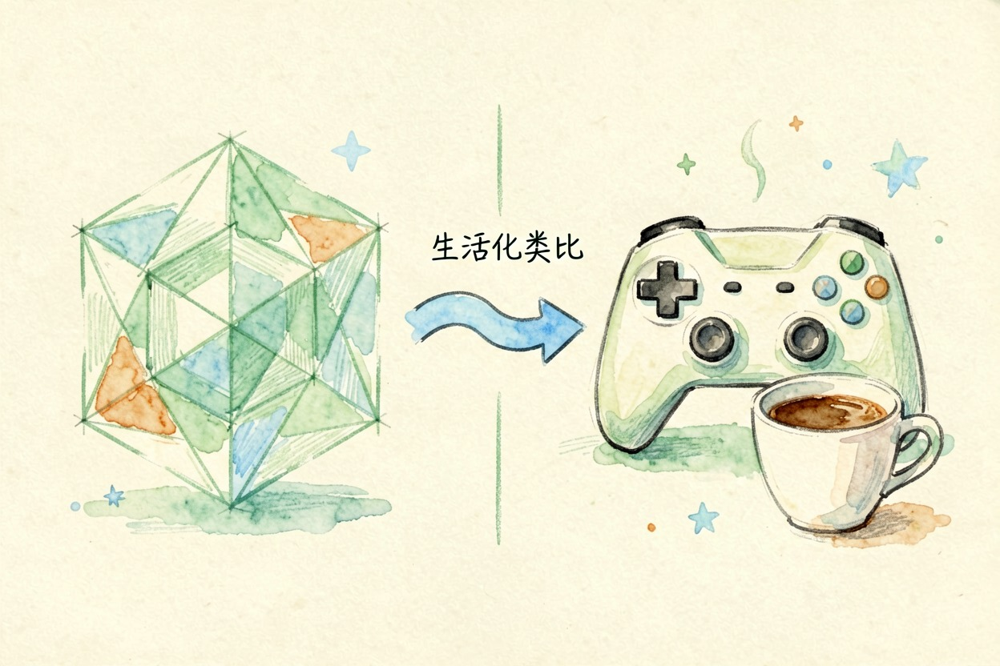
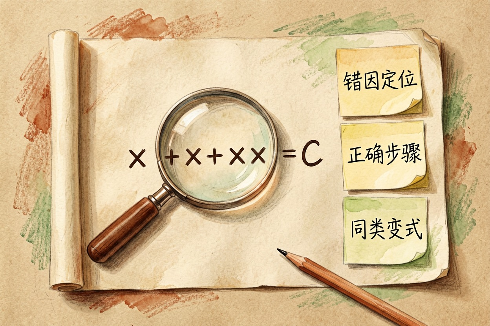
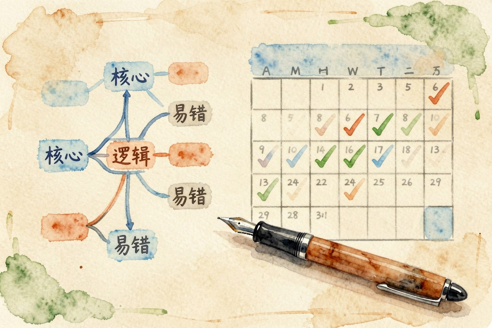

AI 辅助学习怎么做？学生 6 个场景全攻略
六个学习场景，理解、刷题、背诵、写作、做笔记、复习，每个配一个提示词模板。学生照着用，把 AI 当参考，别当答案生成器。
场景一：理解复杂概念——让 AI 用比喻讲给你听

概念不懂？别硬啃。AI 辅助学习的第一招，是让 AI 用你熟悉的东西打比方。数学公式、物理定律、历史事件，都能这么讲。别让 AI 直接讲课本定义，那和翻书没区别。提示词这样写：
请用【打游戏、点外卖、追剧】这类我熟悉的事，向高中生解释【这个概念】。
要求：先给一句话结论，再分三点展开，最后说这个比喻哪里不准确。例子：把「导数是瞬时变化率」讲成「车速表上某一瞬间的速度」。比喻不完美没关系，重点是你先建立起画面感，再回去补细节。
场景二：刷题和错题分析——让 AI 当你的错题老师

错题是提分的金矿。AI 辅助学习刷题时，把错题原样贴给 AI，让它做三件事：分析错因、讲清步骤、出同类题。
这是我做错的题：【贴题目和我的答案】。
请：1) 判断我错在哪一步；2) 给出正确解法和理由；3) 出 3 道同类题让我练。做完先别看答案。自己重做一遍，再让 AI 判对错。同类题做完先别对答案，隔天再让 AI 出一组检验记忆。错题分析的关键是「为什么错」，不是「答案是多少」。错题本越用越薄，分数才会越考越高。每周固定一天，把这一周的错题集中过一遍，防止边学边忘。
场景三：背诵和记忆——AI 帮你做记忆卡片
死记硬背最容易忘。AI 辅助学习背诵时，让 AI 把要点变成问答卡片。睡前过一遍，比反复抄写更有效。
请把下面的内容【粘贴知识点】拆成 8 张记忆卡片。
每张：问题一句、答案一句。先出题，别直接给答案。记忆卡的妙处在于主动回忆。你看到问题先想答案，想不出来再翻面。卡片别一次做太多，8 张正好，睡前和早读各过一遍。这比被动重读，记得深得多。
场景四：写学习笔记——AI 帮你整理和总结

长文读不完？让 AI 辅助学习帮你整理。把讲义或课文丢给 AI，让它输出结构化笔记：核心概念、逻辑链、易错点。写作练习也能用 AI，先自己写，再让 AI 挑逻辑漏洞和病句，而不是让它代写。写作和做笔记，是 AI 辅助学习最实用的两个场景。笔记生成后别直接存，改一遍才是你自己的；AI 整理加你复述，记忆效果最好。复习时让 AI 从笔记里随机抽问，比盯着看记得牢。
请把以下材料【粘贴】整理成笔记：
1) 三个核心概念；2) 概念间的逻辑关系；3) 两个易错点。什么情况下别用 AI 辅助学习
AI 辅助学习不是让 AI 替你学习。考试答案直接抄？成绩不会骗人。需要独立思考的题，先自己想，再看 AI 答案。作文让 AI 代写，你的表达力就废了。AI 是拐杖，不是轮椅。
规划复习也能靠 AI：把考试范围和剩余天数告诉它，让 AI 排一张复习表。用它省时间，别用它省思考。AI 辅助学习的边界，就在这里：AI 出参考，你出判断。想延伸写作场景，看AI 写论文怎么用；想练口语，看用 AI 练英语口语；想整理读书笔记，看用 AI 做读书笔记。更多工具在AI 工具导航。官方教育场景说明见OpenAI for Education{:target="_blank"}，可汗学院的 AI 实践见Khan Academy{:target="_blank"}。
最后说一句反的：别把 AI 当答案生成器。它给的是参考，不是标准答案。AI 辅助学习能不能提分，取决于你有没有真的用它理解、记忆、查漏。别让它替你思考——考试那天，替你坐在考场上的，只有你自己。
本文信息核对于 2026-08-06。AI 产品的价格、免费额度与功能变动频繁，实际以各工具官网当前说明为准。